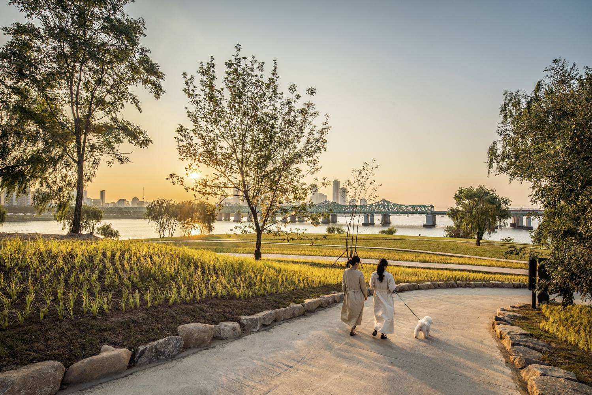
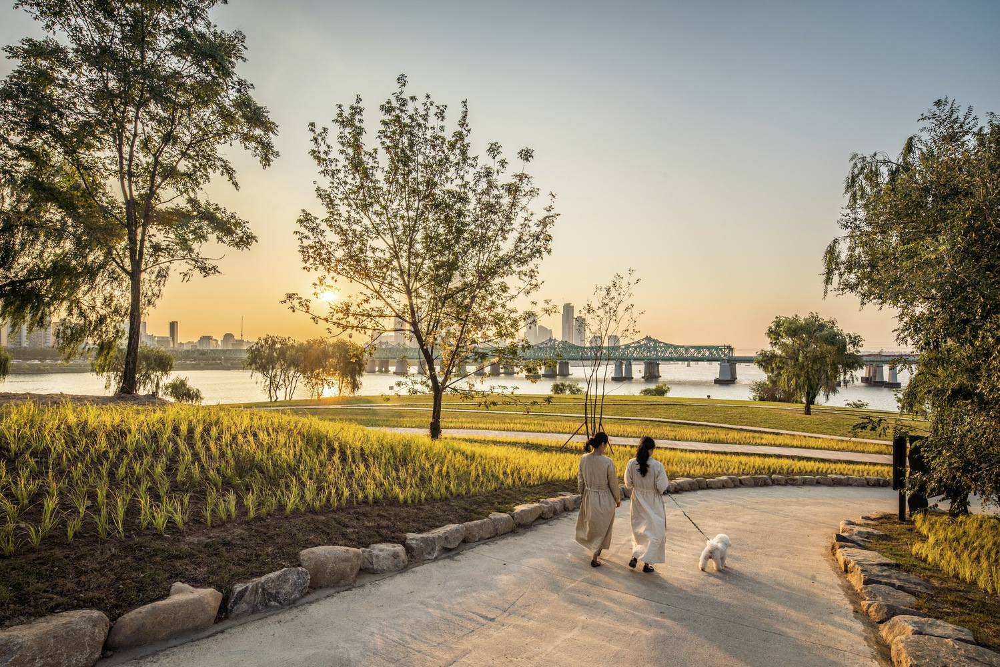

Nodeul Island Park / mmkplus
PARK • SEOUL, SOUTH KOREA

Abandoned and forgotten for decades, Nodeul Island is an artificial island situated on Seoul's Han River. It was first constructed to support the Han River pedestrian bridge (built in 1917) but degraded over the years to its isolated form. Despite its natural beauty and proximity to the city center, the remote character of the island—along with it being hard for visitors to reach its ground—made it difficult for it to thrive. This project reconfigures the island's ground form into multi-levels of public space, with various cultural programs embracing the island's history. It is an inviting public getaway, where citizens and visitors can interact with diverse activities, and feel harmonized with the surrounding city and its natural landscape.
Nodeul Island is divided into two primary levels: the island's original ground level provides various creative and cultural venues, while the upper-level platform (aligned with the existing bridge) provides flexible public plazas and viewing decks. There are offices, shops, galleries, a bookstore, a multi-purpose hall, and a 450-person performance hall—all within a village setting, where a small community of different programs and user groups harmoniously coexist. The island’s landscape also provides visitors with a park-like experience, full of spontaneous social interactions. This new, dynamic, community-driven typology creates opportunities for both frequent and first-time visitors, instantly creating a place filled with historical value and limitless potential.
 


Nodeul Island's existing forest has been restored with a series of sustainable strategies developed through multi-disciplinary collaborations. A new eco-habitat, for endangered species found on the island, is now integrated into the existing forest with viewing decks. Removing decaying plants, and improving the existing vegetation, has allowed for a new public promenade to be constructed along the lower area of the island. Its artificial concrete block terraces, and river shore, have also been upgraded with a series of gardens, reinvigorating the history of the island. Nodeul Island has now been given back to the city. This once-forgotten island has been transformed into a beloved public park and a favorite cultural venue. As the island continues to transform for Seoul’s citizens and visitors, it encourages repeat visits, as it begins its new chapter in the city's history.